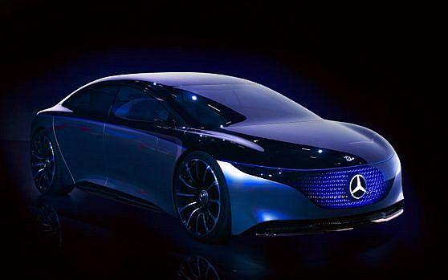

If you’ve spent any time perusing the Mercedes-Benz lineup, you’ve likely come across many, many different vehicle classes, all of which are designated by various letters. To the uninitiated, these classes can seem more like an unintelligible code.
Mercedes-Benz Vehicle Classes Breakdown
| Class Name | Vehicle Type |
| A class | Subcompact luxury hatchbacks and sedans |
|---|---|
| B class | Subcompact luxury minivans |
| C class | Compact executive sedans, station wagons, coupes and convertibles |
| CLA | Subcompact luxury 4-door coupes and station wagons |
| CLS | Mid-size luxury 4-door coupes and station wagons |
| GLA | Subcompact luxury SUVs |
| GLB | Compact luxury crossover SUVs |
| S class | Full-size luxury sedans, coupes and convertibles |
| CLS | Mid-size luxury 4-door coupes and station wagons |
Make Matters: Interesting Facts about Mercedes-Benz
Mercedes-Benz is a luxury car make known for introducing advanced and performance-oriented vehicles to the world. Karlz Benz introduced the first-ever petrol car in 1886 and since then the automaker has been coming up with innovative technology and revolutionary vehicles. The first Mercedes, a rear-engine, three-wheeled vehicle transformed human transportation forever.
FACTS ABOUT MERCEDES
GOTTLIEB DAIMLER CREATED THE FIRST MOTORCYCLE, UNINTENTIONALLY
Gottlieb Daimler, a German engineer best known as the creator of compact, high-speed combustion engines and the founding fathers of today’s Daimler AG unintentionally developed the first motorcycle. Among all other Mercedes-Benz facts, this has to be the most interesting one.
In 1885, Daimler developed a one-cylinder, vertical engine powered by gasoline. He then stuck the engine into a wooden frame based on a bicycle. The machine was known as the “Daimler Reitwagen” in German (meaning riding wagon) or “Einspur” (single track). Today, it is considered one of the first true motorcycles.
MERCEDES-BENZ INTRODUCED THE FIRST PETROL CAR TO THE WORLD
Karl Benz invented the very first petrol car in the world. In 1886, he patented his three-wheeled automobile powered by petrol– the “Motoragen”. Later on Benz’s wife, Bertha took the car out for a 130-mile tour ride through Germany along with their two sons. This was the first-ever world road trip, a 954-cc single-piston car comprising a four-stroke engine huffing a scorching 0.9 hp – which was very powerful for that time. Among other interesting Mercedes facts like being the creator of the world’s first automobile, Karlz Benz was the first person in the world to get a driver’s licence.
MERCEDES-BENZ INTRODUCED A HYBRID VEHICLE IN 1906
Before engines powered by pure petrol took over, car companies played with a mix of electric- and gasoline-powered vehicles. An interesting Mercedes-Benz fact is that the Mercedes-Benz Mixte model was the car maker’s first true hybrid.
The model had a gas engine in front with a dynamo that sparked the two motors in the rear hubs. The Mixte model apparently claimed a top speed of 75 mph.
Before engines powered by pure petrol took over, car companies played with a mix of electric- and gasoline-powered vehicles. An interesting Mercedes-Benz fact is that the Mercedes-Benz Mixte model was the car maker’s first true hybrid.
The model had a gas engine in front with a dynamo that sparked the two motors in the rear hubs. The Mixte model apparently claimed a top speed of 75 mph.
Alot happened after this but fast forward to the present and we have this:
